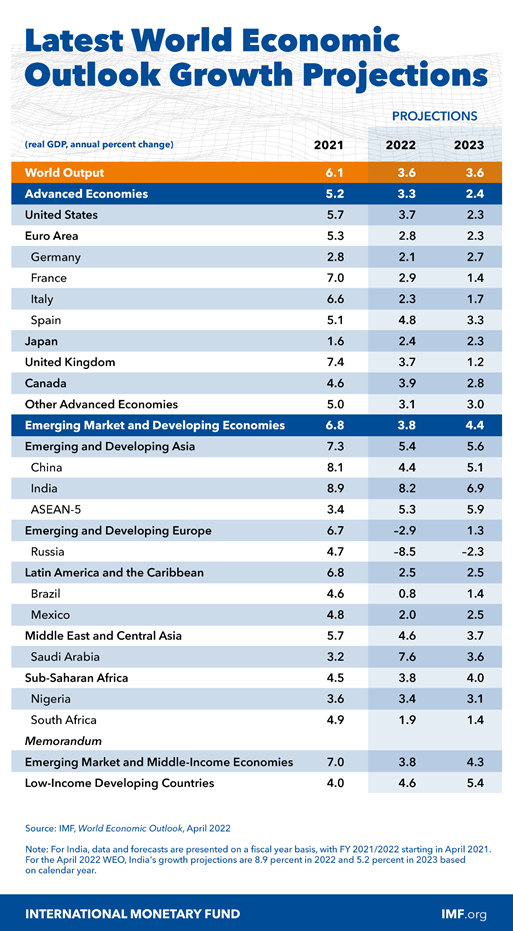

Multilaterals
World Economic Outlook Report 2022: Key Takeaways for India
Relevant to GCO
International Monetary Fund (IMF) released World Economic Outlook Report in April 2022 with the title: “War Sets Back the Global Recovery”. It stressed that the war in Ukraine has triggered a costly humanitarian crisis that demands a peaceful resolution. At the same time, economic damage from the conflict will contribute to a significant slowdown in global growth in 2022 and add to inflation. Fuel and food prices have increased rapidly, hitting vulnerable populations in low-income countries hardest.
Key points of the draft Policy
-
The latest edition of the International Monetary Fund’s (IMF) World Economic Outlook cut its forecast for India’s Gross Domestic Product (GDP) growth in FY 2022-23 to 8.2%, making it the fastest-growing major economy in the world, almost twice faster than China’s 4.4 %.
-
It has also lowered India’s growth projection by 0.8 % points for 2022-23 from its previous forecast (9%) for the same period in 2021.
-
In 2021, India registered a growth rate of 8.9 %.
-
In 2023-24, India is estimated to grow at 6.9 %.
-
With import bills rising due to high commodity and fuel prices, the IMF estimates India’s current account deficit to widen to 3.1% in FY 2022-23 from 1.6% in FY 2021-22.
-
India was “suffering like many other countries because of the Russia –Ukraine war and negative terms of trade shock "due to higher food and energy prices weighing down trade balances.
-
Additionally, external demand was also softening as the rest of the world’s growth was impacted.
Key points of the draft Policy
-
The IMF has projected global growth at 3.6 % in 2022 and 2023, 0.8 and 0.2 % lower than in the January 2022 forecast, respectively.
-
The downgrade largely reflects the war’s direct impacts on Russia and Ukraine and global spillovers.
-
The recent lockdowns in key manufacturing and trading hubs such as Shenzhen and Shanghai (China) due to the resurgence of covid cases would likely compound supply disruptions elsewhere in the region and beyond.
Key Recommendations
-
Monetary Tightening - It recommended monetary tightening by central banks to keep inflationary expectations in check amid global supply disruptions caused by the war in Ukraine. The IMF warned that the war would “severely set back the global recovery," slow growth and stoke inflation. Monetary policy should remain accommodative (where inflation is well behaved), while proactively addressing financial stability risks using macroprudential tools.
-
Monitoring of Rising Prices - Monetary authorities should carefully monitor the pass-through of rising global prices to domestic inflation expectations to calibrate their responses.
-
Targeted Income Support to Households - The IMF report backed targeted income support by governments to alleviate stress on household budgets in countries facing large price increases. Policymakers will need to continue supporting their economies while dealing with more limited policy space and higher debt levels than prior to the pandemic. This requires better targeted measures to leave space for prolonged support if needed. With multi-speed recoveries, a tailored approach is necessary, with policies well-calibrated to the stage of the pandemic, the strength of the economic recovery, and the structural characteristics of individual countries.
-
Unique Identification Number:Prioritise Healthcare - The emphasis should be on escaping the health crisis by prioritising health care spending, on vaccinations, treatments, and health care infrastructure. Fiscal support should be well targeted to affected households and firms.
